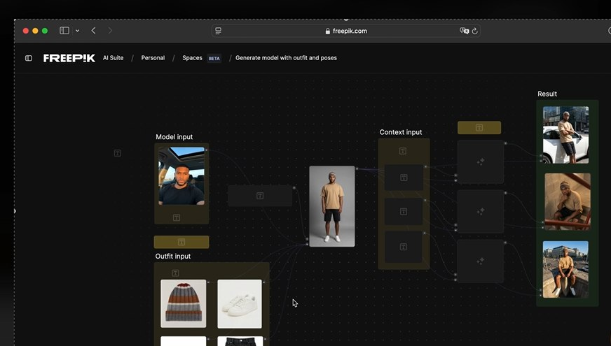
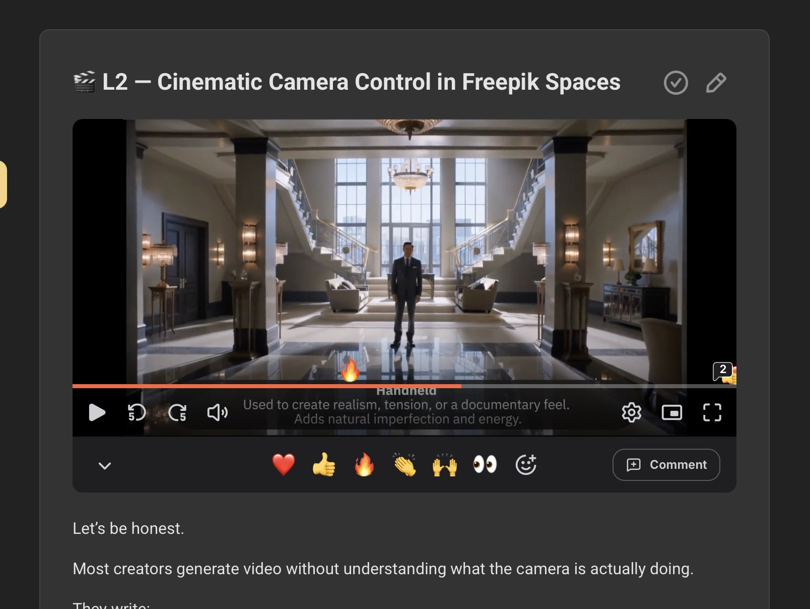
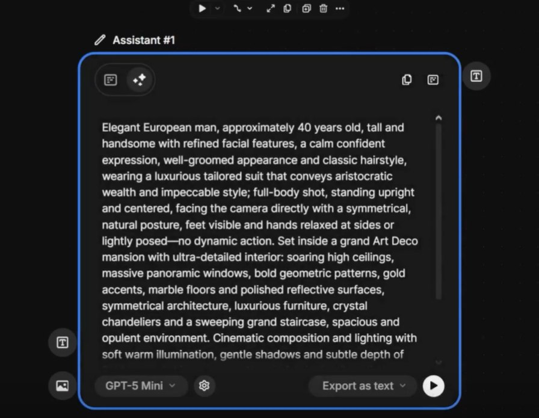

O que você vai criar
Screenshots reais da interface e dos resultados gerados no curso

Video Generator — galeria de carros 4x4 cinematográficos

Canvas com seletor de nodes — montando seu pipeline visual

Pipeline de personagem e outfit — consistência visual garantida

Image Generator Node — configuração profissional de geração

Câmera cinematográfica handheld — técnicas de controle de câmera

Assistant Node — prompts detalhados para cenas cinematográficas